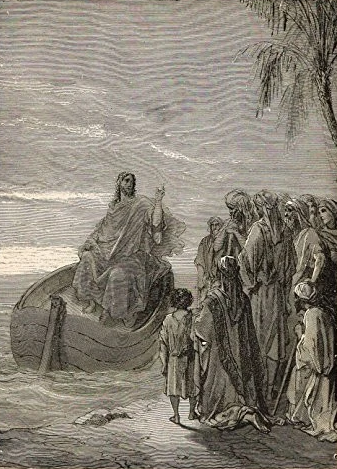
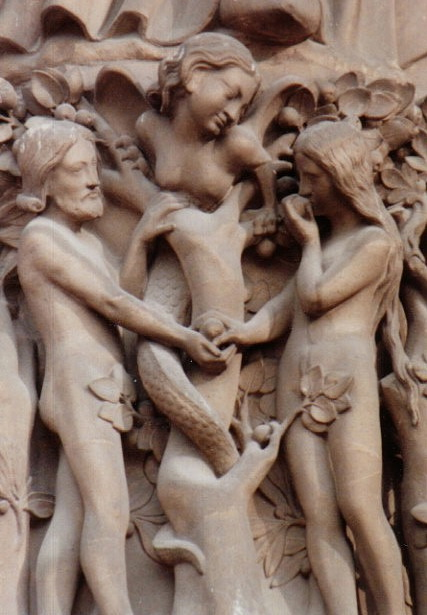
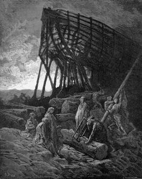
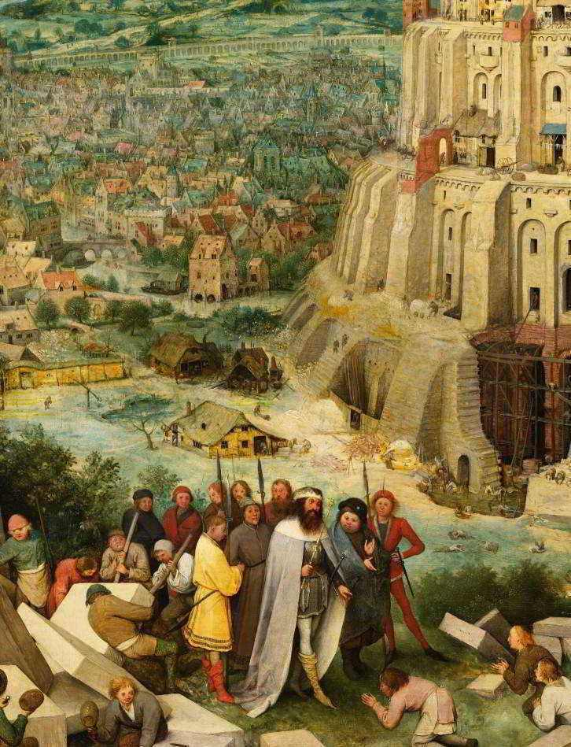

Pastorais Virtuais
Aos discípulos de Jesus de Nazaré
Aqui estão algumas pastorais escritas para discípulos e discípulas de Jesus que tentam viver a sua fé em meio aos desafios de um mundo em caos.
Sejam bem vindas e bem vindos.
Do Caos ao Cosmo
-
"A terra, porém, estava sem forma e vazia; havia trevas sobre a face do abismo, e o Espírito de Deus pairava por sobre as águas."
- Gênesis 1:2
Caos, essa é a melhor definição para o estado da terra antes dos Atos Criativos do Senhor. Sem forma, vazia, confusão, desordem, escuridão. Havia trevas!
Mas o Espírito do Senhor pairava...
Nenhum caos, por mais problemático que seja, é capaz de afastar o Senhor. Assim como estava a terra, existem momentos das nossas vidas que a melhor palavra para definir é caos. Tudo fora de lugar, por dentro e por fora. Confusão, desordem, bagunça. Mas Ele, e somente Ele, tem poder para dar ordem ao caos. O Eterno paira sobre nós.
É o Senhor que poder reorganizar, dar forma, preencher, dar vida e paz. "No princípio Deus" é mais do que um fato histórico, é uma declaração de fé.
Cremos que onde Deus está há possibilidade de novos princípios. Acreditamos que Ele pode fazer com que "os caos" da vida tomem forma, ganhem vida e sejam iluminados.
Que o Espírito do Senhor paire sobre a sua vida, sua mente e seu coração. Que seu dia seja de ordem, de paz e de vida.

Verdade
-
"Mas a serpente, mais sagaz que todos os animais selváticos que o Senhor Deus tinha feito, disse à mulher: É assim que Deus disse: Não comereis de toda árvore do jardim?"
- Gênesis 3:1
Dizem que vivemos a era da Pós Verdade, ou seja, vivemos a era em que o que importa mesmo não são os fatos em si, mas aquilo que eu quero acreditar.
Nesse contexto, os critérios utilizados para diferenciar o certo do errado, o verdadeiro do falso, o bom do ruim são questões, exclusivamente, de fórum íntimo; se eu concordo, se me traz boas sensações, se eu gosto de quem está falando, se eu queria que fosse desse jeito. Esse é o motivo pelo qual as "fake news " são tão bem aceita entre nós.
O Joseph Goebbels, líder da propaganda Nazista certa vez disse: "Uma mentira contada mil vezes, torna-se uma verdade."
Essa afirmação, junto com a proposta da serpente, nos ensinam pelo menos 4 coisas sobre a mentira e o mentiroso:
1. O mentiroso sempre fala aquilo que queremos ouvir: as nossas tentações são os nossos pontos fracos.
"Então, a serpente disse à mulher: É certo que não morrereis. Porque Deus sabe que no dia em que dele comerdes se vos abrirão os olhos e serão como Deus..." (Gn 3:4-5).
2. O mentiroso faz propostas tentadoras e aparentemente interessantes: não nos interessaríamos por mentiras ruins.
"Levou-o ainda o diabo a um monte muito alto, mostrou-lhe todos os reinos do mundo e a glória deles e lhe disse: Tudo isto te darei se, prostrado, me adorares." (Mt 4:8-9).
3. O mentiroso está acima de qualquer suspeita: falar e vestir-se bem são estratégias utilizadas por aqueles que querem impressionar.
“Cuidado com os falsos profetas. Eles vêm a vocês vestidos de peles de ovelhas, mas por dentro são lobos devoradores." (Mt 7:15).
4. O mentiroso sempre tem os seus propagadores: Não é porque todos dizem que é verdade.
"Assim, os soldados receberam o dinheiro e fizeram como tinham sido instruídos. E esta versão se divulgou entre os judeus até o dia de hoje." (Mt 28:15)
Por isso, cuidado com quem você dá ouvidos, com as verdades inquestionáveis, com as propostas boas demais.
A verdade nem sempre é o que você quer ouvir, concorda ou pensa.

Pecador!
-
"O Senhor disse a Caim: 'Por que você está furioso? Por que se transtornou o seu rosto? Se você fizer o bem, não será aceito? Mas, se não o fizer, saiba que o pecado o ameaça à porta; ele deseja conquistá-lo, mas você deve dominá-lo'”.
- Gênesis 4:6-7
Somos especialistas em justificar nossos erros. Rapidamente encontramos explicações para algo que fizemos ou queremos fazer e que, no fundo, sabemos que é errado.
Além disso, a maioria de nós, quando flagrados em nossos erros, ficamos furiosos e reagimos com rispidez.
A verdade é que é extremamente incômodo assumir a confissão: "pecador". Mas, sim, somos pecadores. E não há nenhuma virtude nisso. Por que também tem aqueles que, ainda com a tentativa de escapar com dignidade da sua culpa, afirmam com um certo ar de "orgulho": errar é humano.
Alguém certa vez, brincando, cunhou a frase para o Homer Simpsons: "A culpa é minha e eu a coloco em que eu quiser". É uma brincadeira que traz verdades sobre nós, seres humanos. Pois gostamos de colocar a culpa pelo nosso descontrole, pela nossa omissão, pelo nosso egoísmo, pela nossa irresponsabilidade sempre nas coisas e pessoas ao nosso redor.
Gritei porque me irritou, não conversamos porque você não me entende, não fui porque não tive tempo, não fiz porque não sei, e assim seguimos sempre dando justificativas, explicações, terceirizando responsabilidades.
Mas o Senhor diz a Caim:
"...saiba que o pecado o ameaça à porta; ele deseja conquistá-lo, mas você deve dominá-lo".
O caminho correto é admitir as nossas falhas e nos arrepender! Voltar, mudar, corrigir.
Conversão!
Mudança de comportamento, de pensamento, de atitudes são questões necessárias e que requer esforço, ou seja, cabe a você...
O que não cabe é alguém que se encontrou com Jesus dizer: "sou assim mesmo". Nada disso! Jesus nos convida ao arrependimento. Mudar é pré-requisito básico para os seguidores e seguidoras do Mestre de Nazaré.
Deus seja contigo

Resistente
-
"A Noé, porém, o Senhor mostrou benevolência."
- Gênesis 6:8
Resistente!
Essa é uma das características de um cristão. A decisão de seguir a Jesus é, ao mesmo tempo, a decisão de não seguir a um sem fim de convites e propostas que recebemos em todo o tempo. E para negar todos esses caminhos propostos é necessário ter resistência. Acredito que o que melhor define santidade é exatamente isso.
Em nosso meio, a ideia de santidade ficou resumida, quase que exclusivamente, a questões comportamentais e exteriores do tipo: Pode, não pode; faz, não faz; veste, não veste. Contudo, penso que essas coisas estão na superfície, bem na superfície da coisa.
Ser santo é um compromisso pessoal e de consciência de negar a tudo que tenta nos conduzir a caminhos distantes da vontade do Senhor.
Não podemos esquecer de que vivemos em um mundo que está no maligno. (1 Jo. 5:19) e ser santo é o extremo oposto a isso, ou seja, estar em Cristo (2 Co. 5.17). Paulo escrevendo aos romanos disse:
"Não vos conformeis com esse mundo..." (Rm. 12.2).
Contudo, é importante esclarecer esse termo. Mundo, nesse sentido, tem mais a ver com intenções dos corações, princípios que regem comportamentos e valores que moldam caráter, do que com manifestações culturais em si.
Ou seja, o mundo a que Paulo se refere não está, necessariamente, numa música secular, ou em um filme não cristão, ou ainda numa festa que não seja "gospel". Mas, naquilo que está nos corações, nas relações e nas motivações das pessoas, e esse é o perigo, pois essas coisas podem estar numa festa qualquer, num culto de adoração ou em uma reunião solene.
O que Paulo nos exorta é para vigiarmos os nossos corações e não permitirmos que a forma de pensar, julgar ou se relacionar dessa era (mundo), que reina nos corações dos que não conhecem a Deus, penetre em nossos corações também.
A santidade de Noé esteve em sua resistência de viver em um mundo mal, perverso e alheio a Deus e não se permitir ser contaminado. Isso é ser santo e os santos sempre são alcançados pela benevolência do Senhor.
Silêncio
-
"Então Deus lembrou-se de Noé e de todos os animais selvagens e rebanhos domésticos que estavam com ele na arca, e enviou um vento sobre a terra, e as águas começaram a baixar."
- Gênesis 8:1
Não há silêncio que nunca termine!
Essa frase está em um trecho de um poema do poeta e ex-senador chileno Pablo Neruda, e foi utilizada como título da autobiografia da também ex-senadora Íngrid Bitencourt.
A Ingrid, em 2002, quando fazia campanha para eleições presidenciais na Colômbia, foi sequestrada pelas FARC e passou seis anos em cativeiro, nas selvas colombianas. Quando liberta, no livro que trazia as memórias desses dias de prisão, ela deu esse título. "Não há silêncio que nunca termine.
Todos nós achamos maravilhosa a história da arca de Noé. Uma das histórias bíblicas que gostamos de ensinar as nossas crianças. Nela falamos do cuidado de Deus, de como o senhor provê todas as coisas e de como ele protegeu Noé, sua família e todos os animais.
Mas sinceramente, além de tudo isso, eu fico pensando na agonia que foi passar quarenta longos dias num mesmo ambiente, cercado de animais. Imagine a confusão!
O cheiro dos bichos, o barulho, a agitação, a rotina. As fezes, o odor forte da urina, carrapatos...Imagino que logo no segundo dia, Noé já começou a desejar que esse tempo passasse logo. Mas não passou, não rapidamente.
Existem momentos das nossas vidas que o que mais a gente deseja é que passe logo. Uma fase ruim, um processo de recuperação de saúde, uma crise financeira, um problema de relacionamento. Coisas como essas fazem com que os dias pareçam infindáveis e as noites se transformam em densas trevas.
Aqui é onde a fé vacila, as forças se esvaem e a esperança nos escapa. Mas o Senhor não esquece de nós. Ele sempre vem ao nosso auxílio. Ainda que pareça não haver solução, ainda que as forças contrárias pareçam poderosas, ainda que a sensação de impotência nos amedronte, saiba, o Senhor tem todo o poder.
Ele sempre vem, pode confiar. Ora Ele vem para nos livrar, ora pra nos dar a paz, ora para apenas ficar ao nosso lado e dizer: "Eu estou contigo. Não temais". Acredite: Não há silêncios nunca terminem.

Unidade na diversidade
-
"Venham, desçamos e confundamos a língua que falam, para que não entendam mais uns aos outros”.
- Gênesis 11:7
Unidade na diversidade.
Essa frase define bem a Igreja de Jesus. Uma comunidade de pessoas marcadas pelas diferenças, mas que, intencionalmente, resolvem caminhar juntas. Jesus não nos chamou para sermos iguais, Ele respeita as nossas particularidades, nossas diferenças, nossas escolhas.
Não precisamos ser iguais para sermos "um". A unidade da Igreja não é evidenciada pela sincronia dos movimentos, preferências e aparências dos seus membros, e sim, pela direção que caminham.
Por sermos seguidores de Jesus, nos dispomos a superar as nossas diferenças para andarmos juntos. A direção e a forma de caminhar são estabelecidas pelo Mestre e nós obedecemos, Ele é a referência. Deixamos de olhar para nós mesmos e olhamos para o Cristo. Enquanto os nossos olhos não saírem de nós mesmos, seremos incapazes de experimentarmos a unidade proposta por Jesus.
Na vida comunitária, as nossas diferenças serão um grande obstáculo a ser superado. O caminho não é esconde-las ou mudá-las, mas aprender a viver com todas as nossas características, pois são nelas que estão a nossa identidade. Quem somos é o conjunto de pequenos detalhes que compõe esse "mosaico" da nossa existência, exatamente igual à Igreja de Jesus.
O derramamento do Espírito Santo na festa do Pentecostes foi o início de uma nova era na humanidade. Desde a tentativa da construção da Torre de Babel, as diferenças entre as pessoas seria o maior impedimento à comunhão. O próximo passou a ser o estranho, o inimigo o opositor.
Esse versículo 7 é o ponto chave. Quando perdemos a capacidade de dialogar, quando deixamos de ouvir e ser ouvidos, as diferenças que deveriam ser a mais bela as características de um povo, passa a ser o principal fator de rupturas. Na escuta há empatia, há ponto de contato, há comunhão. No Reino de Deus, ouvimos a voz de Jesus e as vozes de todos.
O maior poder que os seguidores de Jesus receberam em Pentecostes foi a capacidade de ser um só povo. Ali, os preconceitos, as discriminações, os julgamentos caíram por terra. Se manifestou o poder da unidade, da aceitação, do acolhimento. Ninguém é mais estranho, todos somos irmãos queridos e benditos e Deus, que é um só Deus e Pai de todos, é sobre todos, por meio de todos e em todos. (Ef. 4.6).